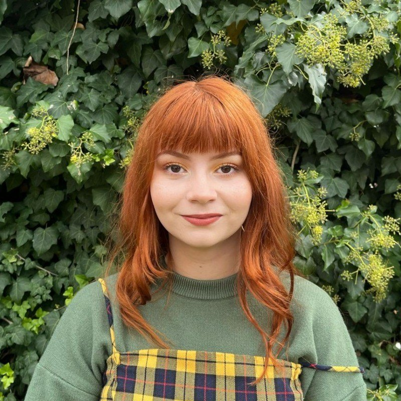

Captura del proyecto

SALA 01 · BIENVENIDA
Diseño productos digitales y estudio Curaduría de Artes. Pienso cada pantalla como una sala de museo: qué ves primero, qué descubrís después.
SALA 02 · SOBRE MÍ
Tengo 25 años y vivo en Ciudad Autónoma de buenos Aires. Diseño productos digitales, estudio Curaduría de Artes y creo que una buena interfaz se disfruta como una buena muestra.
Soy diseñadora UX/UI y product designer. Hace más de dos años que me adentro en productos digitales de punta a punta: hablo con usuarios, diagramo flujos, diseño interfaces, prototipo y testeo hasta que todo cierra.
Hoy estoy en Gurú Soluciones diseñando sitios y tiendas online. Antes, en Goosebelt, lideré proyectos B2B de inicio a fin, muchos de ellos desde cero: arrancar con la hoja en blanco, entender cómo trabaja cada equipo y convertir eso en herramientas que se usan todos los días. Me involucro en todo el proceso, desde la primera entrevista con usuarios hasta la entrega a desarrollo, trabajando codo a codo con negocio y tecnología.
Mi camino no fue lineal. Pasé por Ingeniería en Sistemas y por Administración antes de caer en el diseño, y me quedé con lo mejor de cada una: lógica, mirada de negocio y mucha curiosidad por las personas. La curaduría es la pieza que faltaba para contar todo eso con más sentido.
SALA 03 · ARTE + TECH
Buena pregunta. Me la hice yo también, durante bastante tiempo: ¿cómo junto el arte con el mundo tech sin que ninguno de los dos se ofenda?
Resulta que ya estaban más cerca de lo que parecía. Un curador decide qué mostrar, en qué orden y hacia dónde va tu mirada. Yo hago lo mismo, pero con pantallas. Los dos pensamos en recorridos, en jerarquías y en la persona que entra por la puerta (o hace scroll).
Así que no, no estoy abandonando el mundo tech, sumo la curaduría para diseñar con más relato y tratar cada producto como una muestra que vale la pena recorrer.
“Diseñar una interfaz es curar una experiencia: elegir qué se ve, cuándo y por qué.”
SALA 04 · PROYECTOS
Cada proyecto, una obra. Deslizá o pasá el mouse para desplegar la colección.
SALA 05 · EN MOVIMIENTO
Así se ven mis proyectos cuando alguien los usa de verdad.
Ecommerce orientado a la venta de buzos deportivos personalizados.
Ecommerce que integra artículos de librería inclusivos para todas las infancias.
SALA 06 · TRAYECTORIA
AGO. 2025 – HOY
Gurú Soluciones
Diseño sitios institucionales y tiendas online en Wix y Duda. Me siento con cada cliente, entiendo qué necesita su negocio y lo convierto en una web clara, que vende y se ve bien en cualquier pantalla.
NOV. 2024 – FEB. 2026
Goosebelt
Lideré proyectos B2B desde la idea hasta la solución digital: trato directo con el cliente, investigación con usuarios y testeos para validar cada decisión.
ABR. 2024 – NOV. 2024
Kiura
Mi primera gran escuela en equipo ágil: wireframes, prototipos, muchas iteraciones y workshops de descubrimiento con clientes y devs.
Lic. en Curaduría de Artes
UNA · en curso
Diseño UI Avanzado
Educación IT
Diseño UX/UI
Digital House
SALA 07 · SERVICIOS
Entrevisto, testeo y miro mapas de calor en Hotjar y Maze hasta encontrar dónde se traba la gente.
Interfaces en Figma con auto-layout, variables y prototipos que se sienten reales antes de escribir una línea de código.
Componentes ordenados y accesibles, para que el producto crezca sin volverse un rompecabezas.
Sitios y tiendas en Wix, Duda y Framer que venden y que el cliente puede manejar solo.
Del primer workshop a la entrega a desarrollo, hablando el idioma de negocio y de tecnología.
SALA 08 · FUERA DE LA PANTALLA
Porque no todo es Figma. Esto también soy yo:
Dostoievski, Tolstói y también los contemporáneos. Si un libro tiene 800 páginas, nombres imposibles y algún drama existencial, ya me ganaste.
Dueñas de la casa, del sillón y, cuando se les da la gana, del teclado.
Desde 2024 coordino mi propio club de lectura. Nos juntamos, debatimos, a veces discutimos fuerte y siempre salimos con una lista nueva de libros por leer.
Los videojuegos son mi plan favorito para desenchufar. Una partida más y me voy a dormir (spoiler: nunca es una sola).
Libros largos, partidas largas y dos gatas con mucha opinión. Eso, más o menos, soy yo.
SALA 09 · PARA ARTISTAS
Acompaño a artistas a llevar su obra al mundo digital: desde cómo se presenta hasta dónde se la ve.
01
Construimos juntos tu identidad visual: logo, paleta, tipografías y un sistema visual que refleje tu obra.
02
Diseño tu web como un espacio de exhibición: tu historia, tu obra y una forma clara de que te contacten o te compren.
03
Llevo tu obra a una galería online para que cualquiera, en cualquier parte del mundo, la recorra como si estuviera en la sala.
¿Sos artista y querés mostrar tu obra al mundo?
Armemos tu muestraSALA 10 · HABLEMOS
Si tenés un proyecto, una vacante o una recomendación de novela rusa, mi bandeja está abierta.